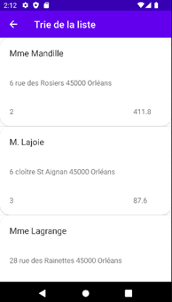

projet lafleur
pour ce projet nous devions relaiser un site de e-commerce pour la vente de fleur.
projet recherche de stages
pour ce projet nous devions mettre a jour un site permettant de gérer les recheche de stages des eleves

projet AMAP
pour ce projet nous devions crée une application mobiles permettant a des livreur de mieux organiser leur livraison

projet stage sticom
pour ce projet qui m'as été confier lors de mon stage de premiere année de bts à l'imprimerie gienoise, je devais realiser un site vitrine sur wordpress, en realisant tout de a à z même le theme

organisation de service SI
pour ce projet qui m'as été confier lors de mon stage de premiere année de bts au CNPE de dampiere en burly, j'ai du assister le SI(service d'information) a mieux organiser leur taches ect...
projet portfolio
pour ce projetje devais realiser un site relatant de mes experience projet et competence obtenu lor de mon bts(je n'ai pas besoin de vous le presenter car vous vous trouvez deja dessus).
projet lafleur
lors de ma premiere année on nous a propser de réaliser en groupe un sitre de e-comerce permettant de vendre des fleurs sur internet, ce site contient une base de donnée un front-end et un back-end (ce projet n'as pas pu etre terminer dans la periode donnée)
voici la page d'acceuille du site internet, la connection n'est pas neccessaire pour y accéder.sur cette page on peut retrouver :
il y a un bouton pour accéder au profil ou se connecter
il y a un bouton pour accéder au panier
une barre de recherche est a disposition, avec un filtre
il y a aussi une section avec les produit du moment
voici la page de details de produit ou on peut retrouver :
des photos de celui-ci
la description de celuiu-ci
ainsi que des commentaire sur ce produit
on peut aussi l'ajouter au panier
voici ce que j'ai pue realiser les reste a été fait par les groupe

je n'ai pas pu continuer les detail de ce projet a cause d'une corruption de la structure du site
competence obtenu grace a ce projet :
lors de la realisation de ce projet j'ai pu mettre en application les cours que j'ai pu avoir sur la gestion de basse de donnée, la manipulation des donnée afin de les utiliser dans un site internet, ainsi que l'utilisation de HTML,CSS,PHP,SQL et Bootstrap
projet recherche de stages
Ce projet a pour but d’aider les enseignants ainsi que les élèves du lycée a gardé un tracé de la recherche de stages des élèves, les demandes, les refus, les stages valider ect…. Ce projet s’étend sur plusieurs années, ce sont à chaque fois les élèves de bts sio2 qui réalise des modifications afin de peaufiner le site et régler des potentiels soucis, nous avons été répartis dans 3 groupes, pour 3 projets, je suis arrivé sur ce projet en cours de route ayant fini celui auquel mon groupe était assigner. Mon groupe a donc repris la version des sio2 de 2022 et nous avons donc dû faire des modifications sur celle-ci. Ces site contient une base de donné, un front end et un backend
Tout commence par une page de connexion où l’on peut faire trois choses.
S’inscrire : permet de renseigner un nouveau compte
Se connecter : permet de se connecter à notre compte s'il existe déjà
Mot de passe oublié : permet de réinitialiser le mot de passe d’un compte existant si celui-ci a été perdu où oublier


Ensuite, nous arrivons selon les droits de notre compte sur une page d’accueil front office ou back office.
La partie front office comporte :
Une page historique des recherches : dans laquelle on trouve l’entreprise la date de la demande, état, la raison du refus, la période, et on peut la supprimer ou la modifier.
On peut aussi ajouter une nouvelle demande, une nouvelle entreprise et un nouveau tuteur.
Un compartiment à gauche nous permet d’accéder à notre profil et a un onglet pour de recherches de stages. (présent dans toutes les pages du front office)
Il y a aussi le bouton pour envoyer des ticket pour rapporter des bug etc… (présent dans toutes les pages du front office)
Ainsi qu’un bas de page pour les copyrights (présent dans toutes les pages du front office)
Le profil : nous montre notre profil, nous permet de le modifier, il y aussi l’historique des stages associer, les attestations, les conventions, et les évaluations

La recherche : Qui nous permet de voir une liste des entreprise et de faire de recherche dans celle-ci, elle comporte une partie recherche avec des filtres, et une partie affichage de la liste comportant : le nom, le téléphone, le nom du contact, l’email, le cp et des information avec un bouton
La partie back office comporte :
Un compartiment à gauche nous permet d’accéder aux différents onglets proposer que je vais développer ainsi qu’un bas de page pour les copyrights. (présent dans toutes les pages du back-office)
Un dashboard ou on voit le nombre d’étudiants avec un stage en sio1 et 2, une liste des élèves sans stages
Et une liste d’élèves avec stages, ces listes comporte leur photo de profil, leurs classes et un bouton pour voir la liste de leurs recherches
Une gestion élève où on peut rechercher des élèves avec des filtres, et une liste des élève que l’on peut modifier et supprimer, cette liste comporte le nom, le prénom, la classe, le début de stages la fin du stage de ses étudiants.
Une gestion entreprise où on peut rechercher des entreprise avec des filtres, et une liste des entreprise que l’on peut modifier, supprimer et voir les demande faites a cette entreprise, cette liste comporte le nom, le téléphone, le nom du contact, l’email, le cp de ces entreprises.
Une gestion des périodes de stages qui comporte une liste de ces périodes avec la date de début la date de fin la promotion, et on peut supprimer ces périodes ou en ajouter.
Pour finir une gestion des tickets comportant une liste de ces dits tickets avec la date, le demandeur, on peut le modifier le traiter ou la supprimer

competence obtenu grace a ce projet :
lors de la realisation de ce projet j'ai pu mettre en application les cours que j'ai pu avoir sur la gestion de basse de donnée, la manipulation des donnée afin de les utiliser dans un site internet, ainsi que l'utilisation de HTML,CSS,PHP,SQL et Bootstrap
projet AMAP
Le projet AMAP a pour but de faciliter le métier des livreurs, la secrétaire remplie les éléments d’une tournée de livraison sur un site internet à disposition du livreur, une application vient récupérer ces données afin de proposer un affichage plus compréhensible et il peut les trier pour optimiser son trajet. Le projet consiste à réaliser cette application.
Tout d'abord, en arrivant sur l’application, on se retrouve face à une petite animation de lancement.

Ensuite, on se retrouve face à 3 boutons voici leur utilité :

Charger : permet de charger les données du site internet sur une base de données intégré au téléphone en appuyant un chargement se lance le temps de récupérer les données, et traduit l’uml pour pouvoir les afficher ensuite.

Afficher : il permet d’afficher les donner afficher sous forme de compartiment avec le non du client, son adresse, le nombre de produits et son montant.


Trier : qui permet de trier les données dans l’ordre pour optimiser les trajets du livreur ceci fonctionne en cliquant sur les compartiments afin de les remonter en haut.

avant le tri :
après le tri :
competence obtenu grace a ce projet :
lors de la realisation de ce projet j'ai pu mettre en application les cours que j'ai pu avoir sur le developpement informatique, la POO(Programmation orientée objet), ainsi que le developpement pour Android
projet stage sticom
Le projet sitcom a pour but de crée un site dit "vitrine" afin de presenter les activiter du Le SYCTOM le centre de deLe Syndicat mixte central de traitement des déchets des régions de Gien et Châteauneuf sur Loire. Ce projet m'as été confier lors de mon immersion au sein de l'imprimerie giennoise durant ma premiere année de BTS SIO; Le site devait etre réaliser sur wordpress, mais pas en utilisant un theme deja préfait, j'ai du crée le theme de a à z ce qui etait interressant
lorsqu'on vas sur le site on se retrouve face a une page d'acceuille conetenant des photo du site aisni que des presentation des activitées realiser
Continuons avec la page nommé "les Elus" qui presente les elus du syctom leurs photo, leurs nom prenom et leurs ville, il y a aussi le mot du president ainsi qu'une presentation des autres memnre du sictom
maintenant nous allons parler de la page CVE (centre d'incinération avec valorisation énergetique) d'arrabloy, cette page consiste a informer sur ce fameux CVE

ensuite il y a la page Travaux, elle consiste a informé sur les different chantier sur le centre de valorisation des dechet énergétique

par la suite la page bilan, qui revele quelque chiffre a propos du centre de valorisation des dechet énergétique

il y a aussi la pager ISBN de bray st aignant, elle informe suer l'installation de stockage de dechet non dangereux

nous avons aussi la pager de rapport annuelles, elle permet de mettre a disposition les rapport annuelles du syctom
ensuite la page compte rendu, elle met a disposition les compte rendu des comités syndicaux

enfin il y a la page de contact qui permet d'ecrire un mail au propriétaire du site

competence obtenu grace a ce projet :
lors de la realisation de ce projet j'ai pu me former au framework wordpress ainsi que ces librairie, j'ai aussi pu apprendrea réaliser un theme wordpress.
organisation de service SI
lors de mon stage au sein du cnpe (centre nucléaire de prodution d'electricitée) de dmapierre en burly j'ai pue réaliser des moyen facilitant l'organisation des tache au sein du service SI(systeme d'information).
competence obtenu grace a ce projet :
lors de la realisation de ce projet j'ai pu mettre en application les cours que j'ai eu sur l'organisation de taches et de projet afin des les disposer au SI DU CNPE
projet portfolio
ce projet est celui sur lequel vous vous trouvez a l'heure actuelle, il sagit d'un portefolio relatant des mes expérience et compétence obtenu lors de mon parcours d'étude en particulier lors de mon BTS SIO d'ailleur, ce projet a été demandée lors de ces 2 année